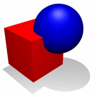
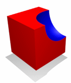
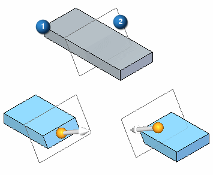
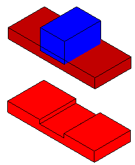
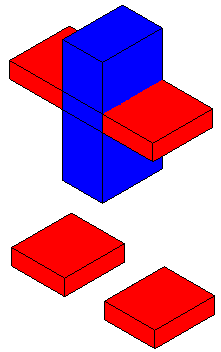
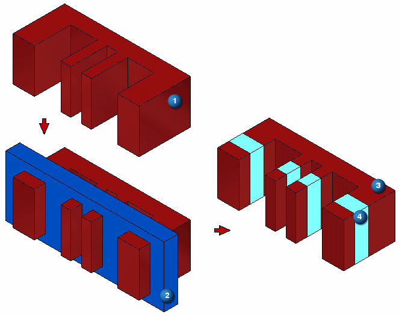
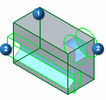
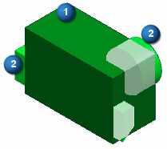

Boolean commands
3D modeling usually involves the use of solid bodies. At times you may want to do the following:
-
Combine multiple bodies into one body.
-
Subtract sections from a body.
-
Work with the intersection of bodies.
-
Split a body.
You use the boolean commands to create the body you need from existing bodies.
The location of the boolean commands are:
-
Part environment
Home tab→Solids group→Add Body list.
-
Sheet Metal environment
Home tab→Sheet Metal group→Add Body list
The boolean operation output body type is the same as the target body. As you perform boolean operations, boolean features appear in PathFinder.
Types of boolean commands
-
Union
Combines selected bodies into a single body. The target body consumes all selected tool bodies.

-
Subtract
Subtracts selected tool bodies from selected target bodies.

If you use a reference plane or a surface body as the tool, use the direction handle to specify the direction to subtract.
For example, the target body (1) has a reference plane (2) as the subtract tool. There are two solutions and you use the direction handle to specify the solution you want.

When using a solid body or construction body as the tool:
-
If the target body only has a portion of its volume removed, then the target body remains a single body.

-
If the target body has volume removed that completely intersects the body, then the target body splits into additional bodies. The target body consumes all selected tool bodies.

-
-
Intersect
Removes all volume that is not common to the selected bodies.
-
Split
Splits a target body with a tool body. The tool body can be a solid body, a reference plane, or a surface.
The result may be one or more additional bodies. If you use a reference plane or surface body to split a target body, the result is two bodies.
For example, (1) target body, (2) tool body, (3) target body split into six design bodies, (4) a single design body.

Dynamic preview
After selecting a target body, the boolean command automatically enters a preview mode. The preview mode:
-
Display only new faces that are created after the operation.
-
Target body edges displayed in 'half-select' color.
-
Tool bodies are transparent and the edges display in 'select' color.
In the following example, a subtract operation produces a dynamic preview which shows a target (1) and two tool bodies (2). The new faces display in light blue. This edge coloration makes it easier to distinguish the tool bodies from the target bodies. You can deselect a tool or target body by pressing the Ctrl key while selecting the body.

You can switch back to the default shading for selected elements by pressing Ctrl+Shift+D.

How do I
Union selected bodiesSubtract a volume from a body
Intersect selected bodies into a single body
Split a selected body into individual bodies
Look up more details
Union command (boolean)Union command bar
Subtract command (boolean)
Subtract command bar
Assembly Subtract Options dialog box
Intersect command (boolean)
Intersect command bar
Scale Body command
Scale Body command bar
Scale Body Options dialog box
Split command (boolean)
Split command bar
Boolean Options dialog box